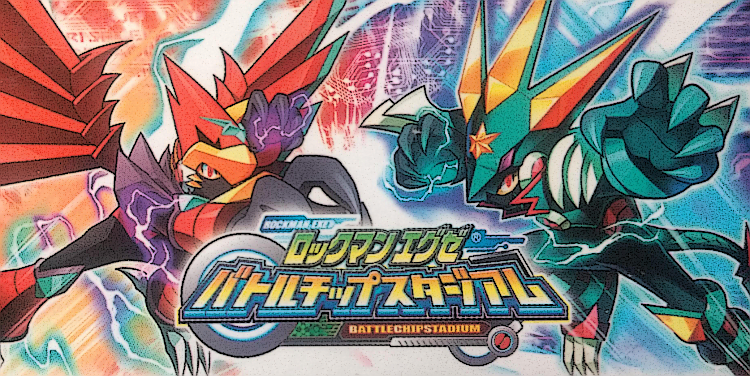
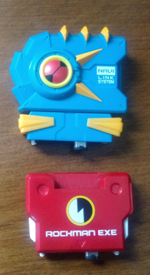
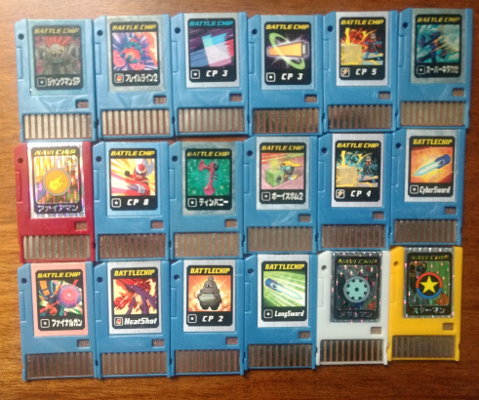
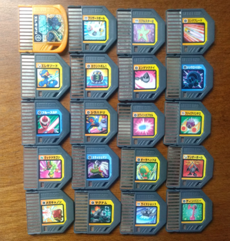
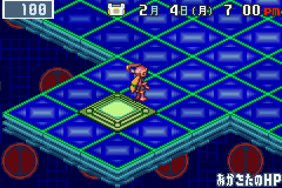
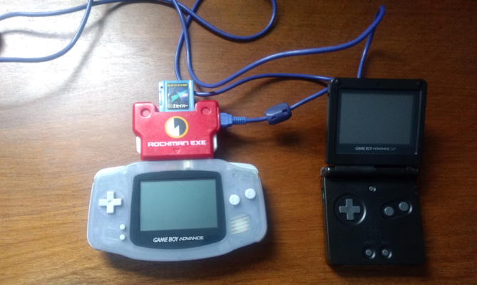
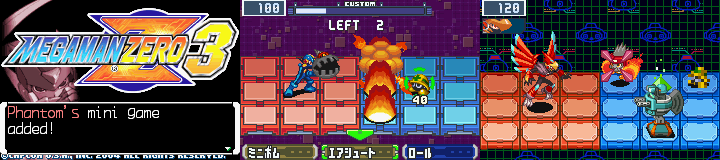
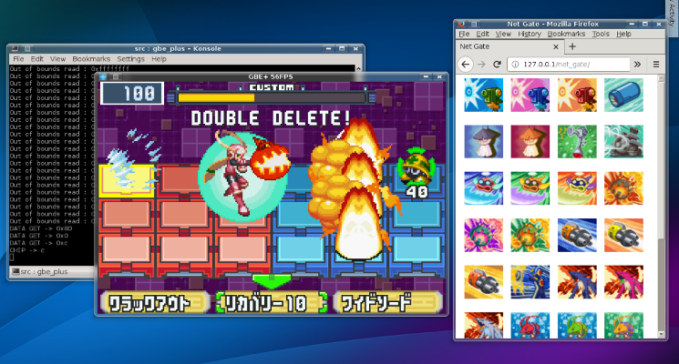

Gateway drug
After finishing that last project, the Soul Doll Adapter, I instantly jumped into the next one with absolutely zero downtime. 2019 was always going to be a wild ride, but I never imagined it run at this pace. It hadn't even been 2 full months into the new year, and I was already poking around at something new. At this point I suppose I really am addicted to the process of discovery, the hunt for clues about aging hardware and software, and the thrill of seeing it all revived on modern machines. Emulating the unknown is my drug of choice. This time, the focus once again shifted towards the Game Boy Advance.
The Mega Man Battle Network sub-series features an AI "NetNavi" version of Mega Man running across the internet, fending off various electronic threats to the world, from hordes of virii, to rogue programs, and even robots later on. The games had people called Operators who would provide attack data to their Navis via small items known as Battle Chips. Once the operator inserted a Battle Chip, the Navi could use it to fight. For the first 3 Battle Network games, Battle Chips were merely in-game attacks that MegaMan.EXE could select. Starting with the 4th game, however, Capcom teamed up with Takara to make specially designed GBA accessories that would allow players to insert real, physical Battle Chips while playing. In one sense, it's a perfect fit for the Battle Network franchise. Net Navis are stored on devices called "PETs", which in some regard mirror handheld consoles like the GBA, so inserting Battle Chips into the system provides a level of immersion that nearly matches the game's world.
These accessories are collectively known as Battle Chip Gates. 3 seperate hardware revisions were released for Battle Network 4, 5, and 6: the original Battle Chip Gate, Progress Chip Gate, and Beast Link Gate respectively. Each version of the Battle Chip Gate had different Battle Chips that were released for that model, and they're largely incompatible without modifications. In terms of research, there initially appeared to be a great deal of ground to cover. Fortunately, I wasn't the only one interested in the Battle Chip Gates. Endrift, author of mGBA, also had her sights set on them. Interestingly enough, we had both purchased some Battle Chip Gates independently around the same time and thus decided to collaborate. I don't often work directly with others since such opportunities aren't frequent, but in this case, everything seemed perfectly aligned. I only managed to get 2 versions of the hardware (original Battle Chip Gate and Beast Link Gate) while endrift also only had 2 versions (original Battle Chip Gate and Progress Chip Gate); between the two of us, we had all the necessary pieces and could split the work.
I should mention that I was a huge Battle Network fan growing up with the GBA. I joined my first online community (GameWinners.com) specifically for the Mega Man forum. My first username (Team Shadow V2) was actually a riff on one of the new features found in MMBN2. The early 2000s was a sort of renaissance for Mega Man games, with the GBA hosting over a dozen on the handheld. I got swept up in all of that, eventually wanting to know more about previous Mega Man games, and that's what ultimately lead me to emulation. In a way, Battle Network is a huge reason why I'm here trying to preserve old games. The Battle Network games will always hold memories of joy and nostalgia for me, so I wanted to see the Battle Chip Gates fully emulated not only for the benefit of video game history, but also for my own enjoyment.
The battle begins
I had previously held off on researching the Chip Gates for a few reasons. First and foremost, GBE+ lacked any emulation of the GBA serial port until very recently. As I mentioned in the last article, back in 2018 GBE+ simply didn't have the infrastructure to handle hardware that connects and communicates via serial IO. This situation improved a lot once I took the time to sit down and properly code everything. My emulator was then equipped to handle multiple virtual devices like the Chip Gates. Secondly, there was quite a bit of hardware to acquire and test, and not all of which was cheap or commonly available. The original Battle Chip Gate (the one used for MMBN4) is widespread and easy to find at a decent price on eBay, but the Progress and Beast Link Gates are harder to come by at reasonable values, and they only pop up a couple of times every few months. Obtaining them required me to save up a moderate amount of cash, then wait for anything interesting to appear.
With some luck, I found myself browsing eBay at just the right time. Someone was selling an original Battle Chip Gate and a Beast Link Gate with large amounts of Battle Chips for each. I believe it came out to be something like 50+ and 80+ chips respectively, so I jumped at the opportunity. The merchant even threw in Rockman.EXE 4.5 and 6, so I didn't have to purchase the games separately. I missed out on buying a Progress Chip Gate as well (someone else got to it a day before I even noticed it), but I figured that could wait. Even if I couldn't get a Progress Gate until much later, at least I could start working on the other 2.
This was all before endrift and I decided to combine our efforts. In fact, we had no knowledge of what the other was planning until later. Little did I realize that she had bought an original Battle Chip Gate and her own Progress Gate, around the same time I was buying stuff no less. By some stroke of fortune, we were on the same path, and we each had one version of the hardware that the other did not. What are the chances of something like that happening? So when endrift suggested that we work together to solve the mysteries of the Battle Chip Gates, how could I say no?
The Chip Gates are large, somewhat blocky accessories that mount onto the GBA. They have little plastic hooks (similar to what you'd find on a GBA-to-GCN cable) that clamp into special notches in the GBA's shell, thereby securing the devices quite tightly. This doesn't exactly seem necessary for the original Battle Chip Gate, as it looks pretty light and immobile just being plugged into the serial port. The Beast Link Gate, however, is heavy for something that's supposed to constantly sit on top of the GBA. Weight-wise, the Beast Link Gate feels just slightly below an AGB-001 (launch model GBA) with no batteries or game cart inserted. It's top-heavy to say the least. Each Chip Gate exposes an additional link port on the side, allowing it to connect to another GBA for multiplayer. This made it possible for 2-player battles with both participants using separate Chip Gates.
  
The original Battle Chip Gate (ProtoMan themed) and the Beast Link Gate (Gregar themed) along with Battle Chips for each.
Using real Battle Chips during fights simply involves inserting them into the slot. There's no latch or anything; the chips just slide in and out. The original Battle Chip Gate has the slot on top of the unit, but the Progress and Beast Link Gates use the sides. The original Battle Chip Gate also came with a sort of plastic Battle Chip feeder where players could put a few chips inside and pop them out one at a time. The idea was to make managing chips a bit easier. Rather than reaching out at random or trying to sift through different piles, players could just grab another one instantly. Unfortunately, no similar accessories were produced for the later Chip Gates.
My first objective was to start off slow. With MMBN4.5, the game displays an icon in the overworld if a Battle Chip Gate has been detected. Getting the game to recognize that an emulated Battle Chip Gate was connected to GBE+ seemed like a good step forward. I went straight to hacking the ROM for 4.5, inserting my own code to record any transfers via the link port. After quite a few tries, I came away with enough data to guess how the detection method worked. The Battle Chip Gate used the 16-bit Multiplayer mode for the GBA serial port, and it appeared that the device continually sent the value 0xFFC6 until it somehow switched operations. MMBN4.5's detection only wanted to see 0xFFC6 returned every time it pinged the Battle Chip Gate. Forcing GBE+ to respond with that value caused the icon to render, but not much else. It was enough to get things rolling, however.

Roll.EXE from MMBN4.5. The Battle Chip Gate icon at the top of the screen indicates the device was detected.
Going back to Zero
After getting the icon to appear, the next part of my research required me to examine the data exchanged between the GBA and Battle Chip Gate while a chip is inserted and then taken out. Those transfers would reveal how the protocol sent chip data to the game, which should have been enough for basic, functioning emulation of the Battle Chip Gate. Endrift had already helpfully compiled data of some transfers between the Progress Chip Gate and GBA, so even before I started probing on my own, I had some idea of what to expect. Instead of trying more ROM hacks with MMBN4.5, I decided to go with Mega Man Zero 3. Although it is not part of the Battle Network series, it uses the Battle Chip Gate to unlock 4 special minigames. This process happens at the title screen, so no game save is necessary and testing can be done right away. Additionally, MMZ3 seemed to communicate with the Battle Chip Gate less frequently in comparison to MMBN4.5, meaning my results would be more compact and easier to parse.
While I initially opted for a ROM hack of MMZ3, I soon switched to a more efficient strategy. Because the GBA and Battle Chip Gate used the 16-bit multiplayer mode for data transfers, I figured out an easier way to grab all of the bytes both sides sent. The GBA's 16-bit multiplayer mode is very similar in concept to the old 4-player adapter on the original Game Boy; every device connected eventually receives data from all participants. In one sense, each GBA broadcasts its data to the others, and when the transfer is complete, they all have copies of what everyone sent. As I described earlier, the Battle Chip Gate has a link port of its own so another GBA can connect for multiplayer battles. Even outside of any multiplayer battles, the GBA and Battle Chip Gate will still broadcast any bytes they transfer to any other attached devices.
So, rather than use a ROM hack, I made homebrew software intended to run on a second GBA. The first GBA would be running a real copy of MMZ3 and have the Battle Chip Gate plugged in. The second GBA simply plugs into the link port on the side of the Battle Chip Gate and records data. In this situation, Player 1 is technically the first GBA and Player 2 is the Chip Gate. The homebrew software saved any bytes that were broadcast from those two whenever a transfer completed. To avoid possible interference, I made sure the second GBA only read data and never sent any of its own. This second GBA basically acts like a spy, tapping into the conversations between MMZ3 and the Chip Gate with either of them being none the wiser. This method was much faster and easier to use than my hacks, and I later used it on MMBN4.5 and MMBN6 without needing any special modifications to my homebrew. I ran this new setup, inserted then extracted a Battle Chip for a minigame, and promptly examined the information I managed to capture. As expected, I received a complete log of all transfers between the game and the Chip Gate. More importantly, I had done so before, during, and after a Battle Chip had been slotted. At that point the overall protocol began to take shape.

This capture method is a simple yet effective setup thanks to the way GBA Link Cables work in 4-player mode.
The first thing I observed was that the Battle Chip Gate appeared to be in some kind of "stand-by" mode when communications started. It continually responded with the same 16-bit value over and over again until the GBA sent a specific command. This repeating 16-bit number was 0xFFC6 in the case of the Battle Chip Gate, the same number that allowed GBE+ to show the icon in MMBN4.5. I cross-referenced the values endrift had collected from the Progress Chip Gate and found that similar instances of the value 0xFFC7 appeared. As we would later find out, these are IDs unique to each model of Chip Gate. The original Battle Chip Gate, Progress Chip Gate, and Beast Link Gate all have different IDs that they report to the games. That makes it possible for software to tell which one is currently hooked up to the GBA. Giving the correct ID is essential for the game to recognize the hardware, so this turned out to be a crucial piece of the puzzle.
Next, I turned my attention to the command. It looked like a sort of "start signal" because the Chip Gate would start returning new data and patterns that went on indefinitely. The command, sent by the GBA, looked something to the effect of this:
0x0000 | 0xA--- | 0xA--- | 0xA--- | 0x8FFF | 0xA--- | 0x0000
The 0xA--- parts varied from game to game. For example, MMZ3 used 0xA380 and MMBN4 + MMBN4.5 used 0xA3D0. The other Battle Network games used different values as well, the but common theme seemed that they always used 0xA280 as a base and simply flipped different bits. As far as I could tell, these different values probably affected some minor aspects of the protocol. Fully understanding them was not relevant for successfully emulating the Chip Gates, so for now it remains a mystery for another day, an area that would require further investigation. The games themselves only care that the Chip Gate responds with its ID for each of the above transfers for the start signal, except for the 7th and final transfer. On the last transfer of the start signal, the Chip Gate switches to a new mode and continually returns something this:
Chip Gate ID | 0xFFFF | 0xFFFF | 0x--00 | 0xFF-- | Battle Chip ID | 0x0000 | 0x0000 | 0x0000
I came to refer to this as the "9-Stage Phase" since there are 9 transfers that keep looping. I've already covered the Chip Gate ID, and the 0xFFFF and 0x0000 values look like padding. The 4th and 5th transfers are actually quite interesting. They seem to hold 8-bit numbers that increase or decrease every time the 9-Stage Phase happens. Their initial values looked random, perhaps assigned using some sort of entropy from the GBA itself. In any case, the number used for the 4th transfer always increases while the 5th always decreases. These two seeds always add up to 255 though. Curiously enough, the seeds are not necessary to emulate a basic Chip Gate. All compatible games just ignore them and don't care whether an emulator adjusts the numbers.
What the games do care about, however, is the 6th transfer, the Battle Chip ID. This is nothing fancy, actually. It's literally just a number, say from 1 to 300. Based on the data I gathered from inserting and removing a Battle Chip, the Battle Chip ID is 0 when no chip is present. When placing a chip inside, it becomes non-zero. The value here corresponds with the binary number formed by the Battle Chip's pins. Inside each Battle Chip, some of the pins on the PCB are connected, while others are not. The combinations of which ones are and aren't linked together form a series of 0s and 1s on the circuit, and thus a number. This number is sent back to the GBA, and the game looks up which Battle Chip that ID represents. From there, the game can then do something like launch an attack against a virus in Battle Network and keep track of when the player removes the current chip for another one.
And, that's pretty much it. Seriously, there wasn't anything convoluted or over-the-top crazy. The games basically expect the Chip Gate to spit out a given number for the Battle Chip inserted. Besides sending back that and the Chip Gate ID, there isn't a lot to deal with here as far as emulation is concerned. All GBE+ had to do was wait for the start signal, then return a few values in a certain order. That's a fair bit easier than something like the Soul Doll Adapter I recently handled. I'm not complaining at all, however. As much as I like solving complex puzzles and reverse-engineering things from scratch, it's nice to find something so straightforward and relatively direct.
Armed with this knowledge, I managed to get the Battle Chip Gate working shortly afterwards. Unlocking minigames in MMZ3 went smoothly, and with further adjustments to my code, MMBN4.5 could use the Chip Gate for attacks. Once emulation for the original Battle Chip Gate was stable, adding the Progress Chip Gate and Beast Link Gate was mostly a matter of using the right Chip Gate ID (0xFFC7 and 0xFFC4 respectively). The Beast Link Gate proved a little trickier thanks to the fact that it doesn't always receive data from the GBA via 16-bit multiplayer mode. Briefly at times, it would switch transfer modes to something called 32-bit Normal mode. This mode largely follows the same operation that the old DMG and GBC systems used, and it's intended strictly for multiplayer involving 2 participants. Those 32-bit Normal mode transfers were throwing GBE+ off. The proper response from the Beast Link Gate is supposed to be zero, but since this edge case wasn't handled in the emulator at first, the game aborted reading any Battle Chips. With a few extra lines of code, I fixed the issue and was able to use the Beast Out Mode and insert Battle Chips during fights.

Unlocking a minigame in MMZ3. Using Battle Chips in MMBN4.5. Last but not least, unlocking Beast Out Mode in MMBN6.
On an interesting note, endrift discovered that the English version of MMBN6 checks for a Chip Gate ID of 0xFF00 instead of the correct ID 0xFFC4. This non-existent ID causes the rest of the checks to fail, essentially disabling content unlocked by the Beast Link Gate. If an emulator returns 0xFF00 anyway, the checks pass, and a large amount of normally hidden features are then accessible. The Chip Gates were never widely popularized in the West, evidently. By the time MMBN6 came out, Capcom decided to cut it from English copies. Even so, they had already implemented things such as using physical Battle Chips during battles, the Beast Out Mode, and various translations associated with all of that. Rather than actually delete the work they had done, the development team simply forced the Chip Gate ID check to never pass!
Internet Interface
Thanks to our joint efforts, endrift and I managed to complete the Battle Chip Gate functionality in our respective emulators in a fairly short span of time. We were also aided by a fellow called mars (aka ssbmars) who provided lots of helpful information, especially with the next phase. Every physical Battle Chip has a number printed on it, however, this number did not always match up with the value formed by the actual pins. So, while the outside number said one thing, the internal circuit said something else. Up to a certain point on the chip list, the numbers were good, but afterwards they kind of got mixed around.
To create a GUI where users could select which Battle Chips they wanted to use, we needed a list of chip names and their IDs, but we could only rely on the electronic number. One possibility would have been to test every combination and make a note of which chips were generated in the games. As it turns out, some folks had already documented the pin combinations for every Battle Chip for every Chip Gate! Mars provided us with the source spreadsheet, and endrift rearranged all of the entries to be in order (according to the numbers formed by the pins, the true Chip ID) and made them into plaintext files. I am grateful to both of them for all of the work they did; it really simplified making an interface.
GBE+ allows users to assign 4 Battle Chips to extra "context" input, such as a second analog stick on a controller. When that input is triggered, the virtual Battle Chip is slotted into the emulated Chip Gate. Once that input is released, the virtual Battle Chip is pulled out. I felt this design was sufficient, as most battles in the games (besides bosses) wouldn't require that many chips to be used, and in between fights new chips could be selected from dropdown menus. Mapping the input to a keyboard or controller meant the chips could be used on-demand without having to click on any UI item. It was sort of like adding 4 extra attacks that could be used at any time.
However, while I thought this should have been enough to at least make the Battle Chip Gates accessible and fun to play around with, some suggested I go further. Enter what I call the "Net Gate", an interface for sending Battle Chips to GBE+ over a network. As strange as that sounds, it permits other applications to act as the graphical presentation for selectable Battle Chips. That is to say, having to constantly switch to a dropdown menu to change Battle Chips is fine for a while, but cumbersome over extended periods, so instead of having GBE+ handle the user interface, another dedicated application can assume that role. That application then sends a few bytes across a network, GBE+ listens, and when it recognizes a Battle Chip ID, it uses that for emulation.
What are the implications of this? Well, the interface could be anything anyone wants, and it can be written using practically any tools, so long as it can communicate via TCP somehow. Unable to resist, I made a demo for myself, a small HTML page with PHP as a backend. The whole thing ran on a local Apache server. The web page showed a list of Battle Chips as icons. Clicking on any one of them caused some PHP code to connect to GBE+ via sockets and transmit the chip ID. I was able to control Battle Chips from a web-browser with ease, scrolling through dozens of possible attacks using my mouse. Since this application was nothing more than some web tech, it wasn't limited to my desktop. My Apache server was visible to my entire home wireless network, so I opened up the HTML page in my phone. Although it may seem unwieldy at first, it's actually a pretty cool and immersive experience.

A basic HTML and PHP Net Gate demo.
The Net Gate really is merely a simple network protocol. The Battle Chip application sends just 3 bytes: 0x80, the high 8-bits of the Chip ID, and the low 8-bits of the Chip ID. The emulated Battle Chip is automatically extracted after a few seconds. Anyone can make their own interface using any tools of their choice. I can't release the test app I made since it uses resources from the game itself, but I will eventually post the code and some video of it in action as an example. It's all pretty niche, so I don't expect anyone to actually try and make a Net Gate app of their own, but just in case someone wants to anyway, I'll be sure to document it in the near future.
Endless Emulation
Another batch of cool Game Boy hardware has finally been emulated after all these years. The Battle Chip Gate models came out well over a decade ago, but at last we can replicate them on our computers. We won't have to worry about losing these fascinating devices or the hundreds of collectible Battle Chips that they used. Teaming up with endrift was a lot of fun and a great opportunity. Now, not 1 but 2 emulators support these unique devices. As always, I've added the fruits of our research to Dan Docs should any others want to follow our examples.
2019 is hardly over, and yet more video game oddities remain. This task is perhaps an endless one. It seems that as soon as I finish one item, my list expands by two more. I continue to unearth new hardware and software that has not been fully documented, and thus unpreserved for future generations. Every day, such things grow older, and the time to properly investigate them grows shorter as well. However, we must all do our parts to make sure nothing is lost. More than anything, this recent adventure has taught me that cooperation amongst ourselves can be a powerful force to meet such a goal. Although at times our endeavors can be scattered and independent, we always have the potential to join together to ensure the culture and history of video games is never forgotten.
So what next for this emudev? Knocking out the Battle Chip Gates crossed off 3 entries on my TODO list. As much as I talk about a seemingly infinite number of things to emulate, the category of Game Boy specific stuff has actually decreased significantly after almost 2 full years of these Edge of Emulation articles. Hopefully, come 2020, I'll have put to rest most, if not all of the Game Boy ones. After that, it'll be time to move onto other systems. Most folks would be surprised how many exotic gaming peripherals exist for consoles such as the NES or Genesis that still haven't been touched. My focus will probably shift towards the Gamecube and Wii though, as I've already started dabbling in that area. But what exactly is coming up in the next few months? Well, that's a secret. I mean it this time. I won't enlighten anyone with clues here, unlike the last few articles. Until next time!